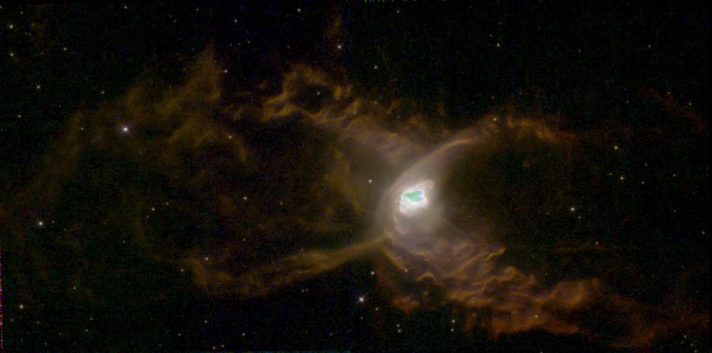
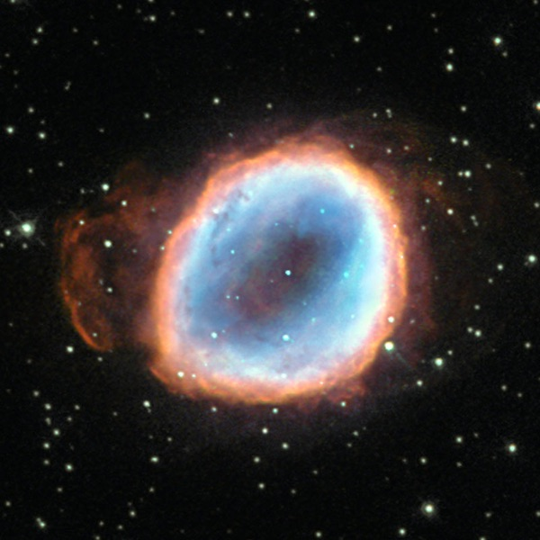
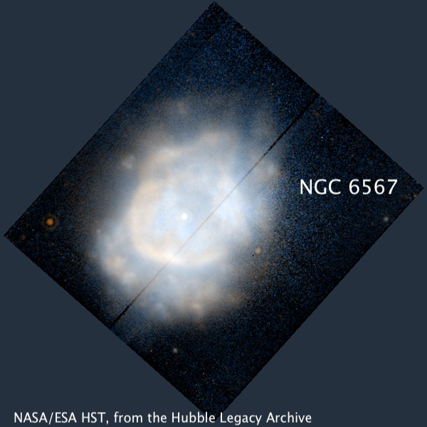
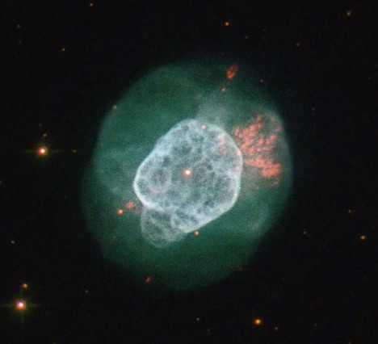
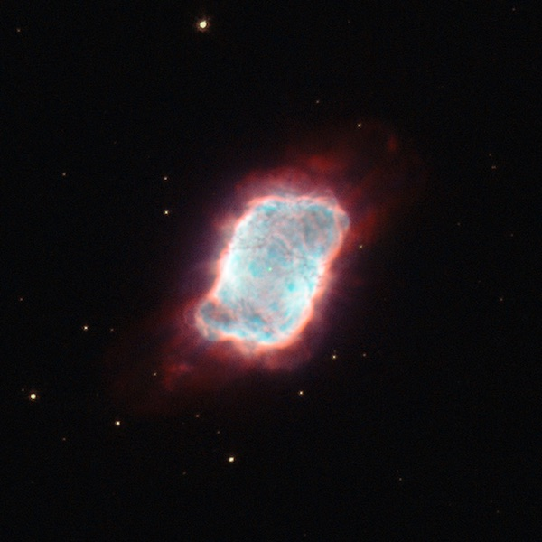
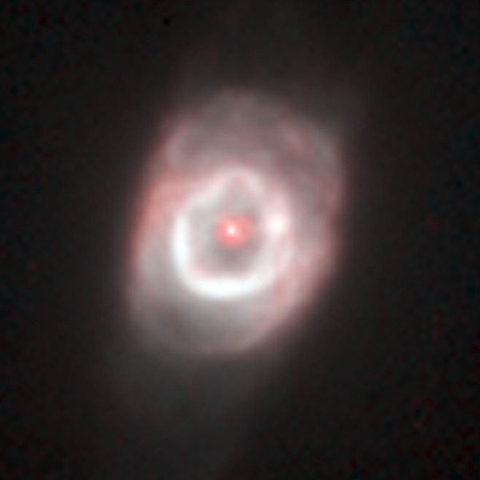
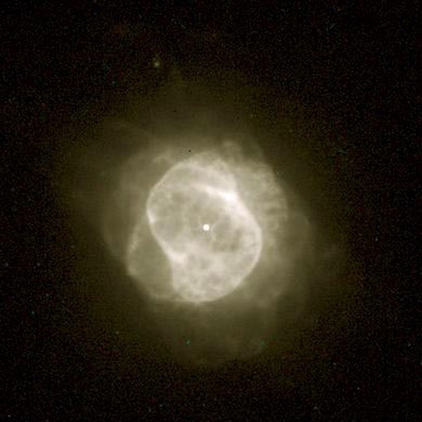

OR (7/17/23): Pickering's Pint-sized Planetaries
OR (7/17/23): Pickering's Pint-sized Planetaries
On Monday night (July 17th), we had a group of 8 observers at Lone Rock including Dan Smiley, Ray Cash, Carter Scholz, Bob Douglas, Dan Durkin and Jim Molinari. I left my house in Albany around 6:30 and drove north on 101 towards Geyserville in very light traffic, making the drive to Lake Sonoma in a quick 85 minutes. Driving across the bay I was surprised it was quite hazy looking west towards Mt. Tamalpais, and assumed it was marine moisture/fog. But during twilight (after I had set up my scope) I noticed haze along the southwest horizon that had a distinct brownish color, likely due to smoke.
Dan Durkin picked up Mercury during twilight in his Televue-85 refractor, which was barely above the hill immediately west of Lone Rock lot. The elevation was perhaps 5° at the time. We (along with Dan Smiley) had looked for Mercury a week earlier (naked-eye and in binoculars) from just east of the Pinnacles but couldn’t be certain of the sighting. Next Friday (July 28th) Mercury will be within 15’ of Regulus and a bit higher. Should make an interesting pair.
Some thin smoke may have impacted transparency as early on the Milky Way had a washed out appearance with little visual structure. But as the Milky Way rose higher and my eyes became fully dark adapted, the transparency seemed to improve to average for the site. Bob Smiley registered SQM readings in the 21.1-21.3 range suggesting my unit (which was left at home) would have recorded 21.2-21.4 based on previous comparisons of our devices. Seeing was better than predicted on weather models and I had no problem using up to 566x with pretty sharp stars using my 14.5” Starmaster.
I started off the night viewing comet C/2023 E1 (Atlas) which was discovered in Virgo on March 1st this year. It is now in the northern part of Draco and circumpolar. At 9th magnitude it was fairly bright at 87x, quite large, but with only a modest concentration in the center. It reached perihelion on July 1st and will be closest to earth next month in eastern Cygnus (August 18th). Check it out if you have a chance.
In the current issue of Sky & Tel, I wrote an article about Williamina Fleming’s deep sky discoveries, which were made while working on the first comprehensive catalog of stellar spectra. This spectroscopic project began in the late 1880s at the Harvard College Observatory under the directorship of Edward Charles Pickering and was eventually completed by Annie Jump Cannon, using the familiar “O,B,A,F,G,K,M” classes. The Henry Draper Catalog encompasses over 350,000 stars and the HD numbers are still used today. Pickering’s innovation was mounting an objective prism on a short-focus astrograph. This way, instead of recording the spectrum of a single star, scores of stellar spectra were captured on each glass plate.
But before embarking on this Draper project, Pickering did a limited visual spectroscopic survey for planetary nebulae between 1880 and 1883. He described the inspiration and technique using Harvard’s 15-inch refractor as follows:
“A direct-vision prism was placed between the eyepiece and the objective of the telescope, thus forming a spectroscope without a slit. When a star was brought into any part of the field it was spread out into a colored line of light, the rays of each wavelength forming an image of the star in a different place. A nebula, on the other hand, being mainly monochromatic, would form a point or small disk of light. The difference in these appearances is so marked that the idea suggest itself that this device might serve to detect any minute planetary nebulae, which could not otherwise be distinguished from stars. Accordingly, a systematic search for such bodies was undertaken. A power of about 140 is employed with a field 12’ in diameter. The telescope is clamped in right ascension and moved through 5° in declination. This is repeated so frequently that the successive sweeps shall overlap, the region continually varying by the diurnal motion."
His search netted 15 new planetary nebulae (all in the NGC) in the summer sky and I had time to carefully examine a dozen of these. Since they are tiny (a few essentially stellar even at high power), blinking with an OIII or narrowband filter (UHC or NPB) is necessary at low power. To identify the field I used paper charts (Megastar) with stars plotted to at least 14th magnitude. All of these compact planetaries are from 11th to 13th mag and are visible in an 8” or smaller scope. The only challenging part is the Milky Way fields can be incredibly dense, so you can get overwhelmed by the multitudes of stars trying to pin down the location. The HST images below don’t reflect what you see in the eyepiece ;-)
Steve Gottlieb
NGC 6439 17 48 19.8 -16 28 44; Sgr V = 12.7; Size 6"x5"
Confirmed by blinking with an OIII filter at 182x only 1' S of a mag 10.4 star. Excellent contrast gain with the filter and equal to the much brighter star. At 226x a small blue-grey disc was visible, just a few arcseconds in diameter. The best view, though, was unfiltered at 352x and 566x with the disc spanning 4" or 5". Occasionally I had the impression of a brighter central peak (central star?).
Pickering discovered NGC 6439 on 18 Aug 1882 and noted "mag 13. A star, mag 11, north 1' and follows 1 second." MegaStar software (and probably others) misidentifies the mag 13 star that is 1' north as NGC 6439.

NGC 6537 = Red Spider Nebula 18 05 13.0 -19 50 35; Sgr V = 11.9; Size 5"
Easily identified at 66x (straight-forward to match up field stars with chart) including mag 7.1 HD 165202 7' to the NE and a mag 11.6 star 1.5' WNW. A rhombus with sides ~2.5' and mag 11-12 stars is centered 7' NW. At 122x, the PN displays an excellent contrast gain blinking with a UHC filter and seemed slightly non-stellar ("soft"). Increasing to 264x resolved an obvious 5" to 6" disc, which was prominent at 395x.
Pickering discovered NGC 6537 on 15 Jul 1882 and called it "small and bright.” Based on photographs taken with the Crossley reflector at Lick Observatory, Heber Curtis (1918) reported NGC 6537 as "a minute disk 5" in diameter, just distinguishable from a star. Round, with clear-cut edges; a slightly condensation at center is suspected, and a very faint ansa in p.a. 25". The huge hourglass-shapes structure visible in deep images that surrounds the central part was missed in the Lick photographs. The nickname “Red Spider Nebula” is probably based on the Hubble image that was released in 1997 (below).

NGC 6565 18 11 52.4 -28 10 43; Sgr V = 11.4; Size 10"x8"
Identified by blinking with an OIII filter at 66x, which gave an strong contrast boost.The location was pinpointed using a mag 8.3 star 4.3' SW. Increasing to 122x and 158x revealed a small, but clearly non-stellar glow. 395x provided an excellent view with a nice-sized ~10" disc. A mag 12.5 star is 40" NW, a faint pair is 40" S, and a mag 12.5 star is 1.0' ESE.
Pickering discovered NGC 6565 on 14 Jul 1880. This was the second of his 17 planetaries found using a direct-vision spectroscope. Compared to NGC 6644 , which was discovered the next night, NGC 6565 was "somewhat fainter, but with a larger disk." (The Observatory, 1881). Heber Curtis (1918) described NGC 6565 as "a minute oval ring 10"x8" in p.a. about 5°. Considerably fainter along the major axis, and the center is relatively vacant.”

NGC 6567 18 13 45.2 -19 04 33; Sgr V = 10.9; Size 11"x7"
NGC 6567 is situated in a spectacular field at 87x -- remarkably rich in stars with a very obvious dark lane (~25'x6') running ~SW-NE" just west of the planetary, ~. The correct "star" was highly suspected before blinking because of its slightly soft appearance. It brightened significantly using an OIII filter. A very small blue disc was clearly resolved at 158x, forming a "double" with a fainter field star just 10" E. Excellent view at 395x with a crisp edge to the disc and the nearby star well resolved. The PN seemed slightly elongated and irregular at 566x.
NGC 6567 was discovered on 18 Aug 1882. Williamina Fleming rediscovered this planetary on Harvard spectral photographs and reported it as new in 1895, perhaps missing the earlier discovery. Curtis (1918) described NGC 6567 as "an oval disc, growing rapidly brighter toward the center; 8"x5" in p.a. 150° in the shorter and about 11"x7" in the longer exposures. Exceedingly faint ansae are suspected in the prolongation of the major axis, making the total length 20", but these may be very faint stars…"

NGC 6578 18 16 16.4 -20 27 02; Sgr V = 12.6; Size 13"x10"
Using 87x (unfiltered), the planetary is fainter of a "double" with an 11th mag star close SW [22" separation]. Adding an OIII filter the PN appears significantly more prominent than this star. At 158x, it is clearly non-stellar at the east end of a string of stars extending to the west. A triple star forming a small equilateral triangle (sides 20") is 1' SE. Excellent view at 395x with a substantial disc 8" to 10" diameter.
Pickering discovered NGC 6578 the same night as NGC 6567, as well as NGC 6439. A quite successful night of observing! Curtis (1918) reported NGC 6578 as "nucleus almost stellar; mag 15. Disk nearly round, 8.5" in diameter; no ansae or structural details discernable.”

NGC 6741 = Phantom Streak 19 02 37.0 -00 26 57; Aql V = 11.4; Size 9"x7"
Identified as a slightly soft bluish star at 87x, with a fainter 13th mag star close NNW [34" separation]. Appears very small, but clearly non-stellar at 158x. Increasing to 395x shows a nice 8" disc and adds a 14th mag star close west [by 18"]. At 566x, a mag 14.5 star was seen SSW [by 25"]. Located 16' N of STF 2434, a wide pair of mag 8.5 stars at 27" separation.
After discovering three planetaries on the 18th, Pickering discovered NGC 6741 the following night. Robert Jonckheere mistakenly catalogued this object as a double star (J 475) in 1911, based on observations with the 14-inch equatorial refractor at the University of Lille. The following year he reobserved it with the 28-inch Greenwich refractor and realized it was nebulous and identical to the planetary NGC 6741. Curtis (1918) noted "No central star. A small bright oval, 9"x7" in p.a. 95°. It shows traces of an indistinct ring structure, being somewhat fainter along the major axis. There is a small, scarcely perceptible protuberance at the western end."
John Mallas coined the nickname "Phantom Streak" in his Jun/Jul 1963 article "Visual Atlas of Planetary Nebula - part V", published in the "Review of Popular Astronomy". He wrote: The "Phantom Streak." First you see it and then you don't...In the 4-inch looks like a broad silver line. Almost uniform in brightness, the ends appear broken and diffused...My visual impression agrees with H.D. Curtis's description of this object. He states "It shows some trace of a ring structure, being somewhat fainter along the major axis.”

NGC 6790 19 22 56.9 +01 30 47; Aql V = 10.7; Size 10"x5"
Using 66x, NGC 6790 appeared as a bright, mag 10.5 "star", which blinked dramatically with an OIII filter. A mag 12 star is 0.6' W. At 140x, NGC 6790 was slightly soft and showed a pale blue color. Increasing to 352x, a high surface brightness small disc was definite, perhaps 2" diameter.
Pickering identified NGC 6790 on 16 Jul 1882 using the direct-vision spectroscope and noted it as "very bright and minute." Curtis (1918) reported it was "Indistinguishable from a star on the Crossley negatives, but shown to have a minute disk visually with the 36-inch [Lick] refractor.”
NGC 6803 19 31 16.4 +10 03 22; Aql V = 11.5; Size 6"
Appears as a mag 11.5 stellar planetary at 66x, with an excellent contrast gain blinking with an OIII filter. A mag 13.4 star is 1' S and a mag 10.5 star is 2.8' N. Using 226x a small pale blue disc was resolved. Increasing to 395x the disc appeared 3" to 4" diameter and it seemed slightly non-uniform at 660x.
This one was found on 17 Sep 1882 and described by Curtis (based on a Crossley photograph) as "a minute round disk, 5.5" in diameter, just distinguishable from a star; fades out a little at the edges."
NGC 6807 19 34 33.4 +05 41 02; Aql V = 12.2; Size 2"
Easily identified at 87x by blinking with an OIII filter, but completely stellar. A handy mag 10.1 comparison star is 1.5' NNE. Unfiltered this star is clearly brighter than the PN, but the relationship dramatically switches using the filter, for a 3 magnitude contrast boost. NGC 6807 appeared stellar at 395x and even 566x. Located 18' NE of orange mag 6.5 HD 184313 .
Two weeks before discovering NGC 6803, Pickering found NGC 6807. Curtis (1918) found it "indistinguishable from a star on the Crossley negatives, but shown to have a minute disk visually with the 36-inch refractor."
NGC 6833 19 49 46.6 +48 57 40; Cyg V = 12.1; Size 2"
Picked up at 87x as a 12th magnitude pale blue "star" and verified with an excellent contrast gain by blinking with an OIII filter. Appears bluish at 226x and looks like a slightly soft star. Strongly suspected to be non-stellar at 396x, though less than 2" diameter. At 566x, I had the impression of a central star and a minute 2" halo.
Found on 8 May 1883. Again, Curtis wrote "indistinguishable from a star on the Crossley negative, but shown to have a minute disk visually with the 36-inch refractor."

NGC 6884 20 10 23.6 +46 27 40; Cyg V = 11.0; Size 6"x5"
Easily identified as an 11th magnitude "star" in a rich star field because of the dramatic contrast gain blinking with an OIII filter. At 140x it was definitely non-stellar and showed a blue-grey color. Increasing to 264x showed a small blue disc 5" to 6" diameter. Easily held both 397x and 660x due to the high surface brightness. Numerous stars are within 2' at high power with the brightest mag 12.2 star less than 2' NW. A mag 14 star is 0.9' NNW and a mag 14.8 star is 0.5' SE. Two more mag 14.5-15 stars 0.9' S.
Pickering discovered this planetary on 8 May 1883. Unfortunately, he made a 1 hour error in the RA and it was cataloged as NGC 6766 with the wrong position. Ralph Copeland found it again (using the same technique) a year later at Dunecht, Aberdeen, in Scotland and reported it as new. Curtis (1918) reported that "no central star can be distinguished. A minute, bright, round disk, of nearly equal brightness throughout, with a suggestion of an elongated brighter central portion in p.a. 135°; 7.5" in diameter in a 5 min exposure.”
NGC 6879 20 10 26.7 +16 55 22; Sge V = 12.7; Size 5"
Identified as a stellar object in a rich star field by blinking with an OIII filter at 87x. Using 158x it appears as a slightly soft bluish star with an excellent contrast gain with a NPB filter. A brighter mag 12.1 star is 1.5' SW, but the PN dominates the star when I add a filter. Two other star are close by; a mag 13.6 50" NW and a mag 14.2 star a similar distance SE. Excellent view at 395x, which shows a very small 5" disc with no central star. Located 14' NE of STF 2634 = 7.8/9.9 at 4" separation.
Pickering discovered NGC 6879 on 8 May 1883 and independently rediscovered by Ralph Copeland on 9 Sep 1884 at DunEcht, Scotland. He remarked "equal in brightness to a star 10.2 mag. Diameter 4.6" by micrometric. It has an 11 mag star at 222.27°, distance 83.2".” Based on a Crossley photograph, Curtis stated it had "A minute disk, 5" in diameter, just distinguishable from a star. Fades out slightly at the edges."